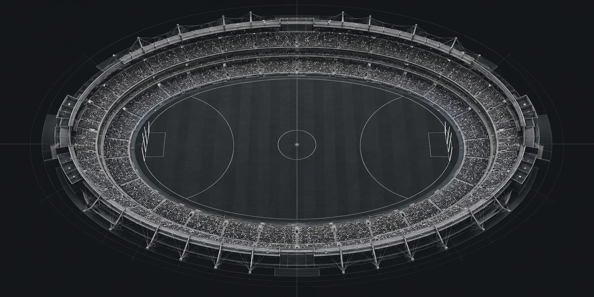

The task
Show supplied crowd-density readings as a heatmap for venue staff.
I built a Python service that turns crowd-density grids into heatmaps venue staff can read.

Show supplied crowd-density readings as a heatmap for venue staff.
Built the rendering, validated inputs and integrated PNG output with an existing service.
Delivered across four sprints, with tests for invalid and equal-value grids.
Read a session's density grid, validate its shape, normalise values to 0–1, apply a readable colour scale and save the PNG. Return the file path so other parts of the service can use it.
A heatmap helps review where people are concentrated. It doesn't predict crowd behaviour, set safety thresholds or prove fewer incidents.